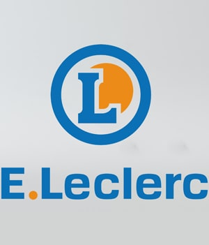

Intégrateur web - consultant en accessibilité numérique
Qui suis-je ?
-
Avant, j'étais apprenti-sociologue avec un Master 2 en poche, mais ça c'était avant...
-
J'aime les parties de football, le café et la bonne nourriture.
-
Depuis une reconversion en 2012 (merci l'IFOCOP), je fais et défais des sites web. Mes clients sont surtout les grands groupes français comme Engie, Renault, Bouygues, etc...
-
Stagiaire en 2012 puis salarié, je suis ensuite passé freelance l'été 2016 : plus de liberté, moins de mauvaises surprises.
-
Je créé des sites web avec du HTML pour le fond, du CSS pour la forme, un soupçon de javaScript natif pour les animations, en respectant les maquettes et en reponsive web design.
- E-mail CV LinkedIn
Mes clients et projets
Les sociétés suivantes listées par ordre chronologique sont mes clients finaux et font partie de mes dernières missions.
-
Chanel
Mission freelance en tant que consultant accessibilité web au sein du pôle Expertise de Chanel. J'avai décidé de sortir un peu du code, en me spécialisant dans ce domaine intéressant et utile qu'est l'accessibilité web.
Neuilly-Sur-Seine
-
ICDC
Dans une équipe agile, nous gérions la maintenance et refonte du site web au sein de la partie informatique de la Caisse des Dépôts. L'équipe travaillait sur du jQuery, HTML5, SASS, Git, Jira et Confluence. Nous avions un Design System en place avec Storybook, des projets sympas et une équipe en or.
Paris
-
Bouygues Telecom
Dans le pôle Digital, l'équipe webmastering comptait environ 8 personnes. Elle gèrait la maintenance de certaines parties du site comme la homepage ou les bannières commerciales. L'environnement technique : Git, Jira, Wordpress, Magento, HTML/CSS, JavaScript, Photoshop...
Meudon la Fôret
Mission Bouygues Telecom -
Louis Vuitton
Dans une équipe agile de 20 personnes, nous gérions la maintenance du site web au sein de Valtech. L'équipe travaillait sur du jQuery, HTML5, SASS, Git, Jira et Confluence. Nous avions une architecture CSS bien calée et conçue pour respecter le Design System en place. Une formation en Vue JS avait aussi été dispensée pour la refonte du site web prévue.
Paris
Mission Louis Vuitton -

E-Leclerc
Mission courte de refonte graphique du site Parapharmacie de E-Leclerc. Un site sous Magento (savoir rentrer dans du PHP), avec Bootstrap 3 et animé en jQuery, il fallait participer surtout à l'amélioration de la version mobile et de la navigation au focus (pour l'accessibilité).
Ivry-Sur-Seine
Mission E-Leclerc -
Renault Digital
Dans une équipe agile de 15 personnes, l'objectif était de créer un produit permettant de visualiser des résultats statistiques. Nous avons élaborer une web app from scratch avec du Java JEE en back, de l'Angular en front end, et du Bootstrap 4 pour l'intégration. Je gérais la partie intégration web, en travaillant sur le responsive web design via le CSS et le HTML...
Boulogne-Billancourt
Mission Renault Digital -
Intersport
Arrivé en renfort sur la partie intégration web, il s'agissait d'une refonte globale du site Intersport avec mon frère jumeau, qui était le lead front du projet. La stack technique : création de templates "vides" avec HTML 5, CSS, jQuery, optimisation des performances, compatibilité inter-navigateurs, Responsive Web Design, Photoshop, SVN...
Longjumeau (91)
Mission Intersport